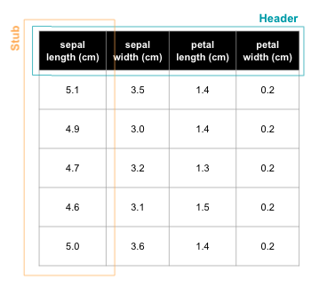

Tables¶
With gslides it’s possible to take either existing data in Google sheets or a pandas DataFrame and visualize it in Google slides.
Styling¶
The package allows the user to style the header row background and the stub column background as well.
To enable a background on the stub column and header row while setting the color find the following parameters below and their corresponding default configurations.
header = True
stub = False
header_background_color = "black"
stub_background_color= "black"
Sizing¶
Sizing is particularly difficult with tables and one needs to be thoughtful about the number of rows and width of columns that will be created. If the Google API returns an error around the minimum row / column width you can either reduce amount of data you are attempting to capture in the table or change the font_size setting.
Custom column proportions¶
The table object will automatically calculate column proportions by finding the longest record in a given column and attempt to split the column proportions by each columns’ longest record. While in many instances this results in a well proportioned table, in other cases a single column is allocated too much width. For this reason the user can specify custom column proportions, a list of floats that represent the % width of each column.